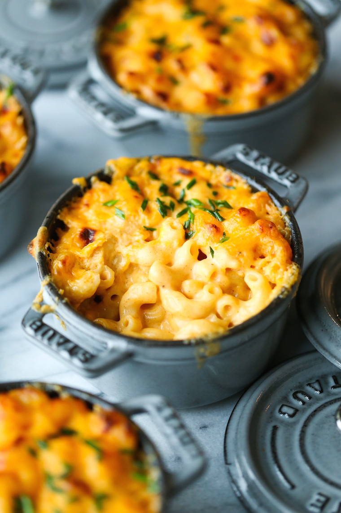

Mac and Cheese

Baked Mac and Cheese Recipe
Everyone’s favorite classic mac and cheese! Super simple, super easy and super quick. You’ll never want the boxed stuff ever again!
Ingredients
- 8 ounces elbow pasta
- 3 tablespoons unsalted butter
- 3 tablespoons all-purpose flour
- 1 teaspoon paprika
- 1/2 teaspoon onion powder
- 2 (12-ounce) cans evaporated milk*
- 12 ounces shredded extra-sharp cheddar cheese, about 3 cups, divided
- 1/4 cup freshly grated Parmesan
- Kosher salt and freshly ground black pepper, to taste
- 2 tablespoons chopped fresh chives
Steps
- Preheat oven to 400 degrees F.
- In a large pot of boiling salted water, cook pasta according to package instructions; drain well.
- Melt butter in a large skillet over medium high heat. Whisk in flour, paprika and onion powder until lightly browned, about 1 minute.
- Gradually whisk in evaporated milk until slightly thickened, about 4-5 minutes.
- Remove from heat. Stir in 2 cups cheddar cheese and Parmesan. Stir in pasta; season with salt and pepper, to taste.
- Divide pasta mixture into 5 (10-ounce) or 6 (8-ounce) ramekins or ovenproof bowls.* Place onto a baking sheet; sprinkle with remaining 1 cup cheddar cheese.
- Place into oven and bake until golden brown, about 20-25 minutes.
- Serve immediately, garnished with chives, if desired.